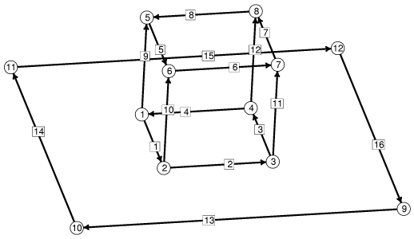

液滴的初始形状为一个立方体，其中一个面（立方体示例中的面 6） 位于桌面上（即 z = 0 平面）。 指定接触角最直接的方法是 声明面 6 被约束在桌面上， 并赋予它一个不同于默认值 1 的表面张力。 但这会导致下文所述的问题。 实际处理接触角的方法是省略面 6，并给面 6 周围的边赋予 一个能量积分，使其产生的能量与包含面 6 时相同。 如果令面 6 的界面能量密度为 T，则我们需要一个向量场 w 使得
/ / | T k . dS = | w . dl / face 6 / bdry of face 6因此根据格林定理（Green's Theorem）， 我们只需 curl w = Tk，这里取 w = -Tyi。其中 i j k 是标准单位基向量。 在实践中，我不会特意去想格林定理； 我只是写下一个线积分，将表面的条带累加起来。
我选择将接触角参数化为桌面与液滴内部表面之间的
角度（以度为单位）。该角度可以在运行时通过给变量
"angle" 赋新值来调整。
我本可以直接将 WALLT 作为参数，
但那样就没有理由展示宏的用法了。
|
 |
初始液滴骨架，顶点和边已编号。 |
mound.fe：
// mound.fe // Evolver data for drop of prescribed volume sitting on plane with gravity. // Contact angle with plane can be varied. PARAMETER angle = 90 // interior angle between plane and surface, degrees gravity_constant 0 // start with gravity off #define WALLT (-cos(angle*pi/180)) // virtual tension of facet on plane constraint 1 /* the table top */ formula: x3 = 0 energy: // for contact angle e1: -(WALLT*y) e2: 0 e3: 0 vertices 1 0.0 0.0 0.0 constraint 1 /* 4 vertices on plane */ 2 1.0 0.0 0.0 constraint 1 3 1.0 1.0 0.0 constraint 1 4 0.0 1.0 0.0 constraint 1 5 0.0 0.0 1.0 6 1.0 0.0 1.0 7 1.0 1.0 1.0 8 0.0 1.0 1.0 9 2.0 2.0 0.0 fixed /* for table top */ 10 2.0 -1.0 0.0 fixed 11 -1.0 -1.0 0.0 fixed 12 -1.0 2.0 0.0 fixed edges /* given by endpoints and attribute */ 1 1 2 constraint 1 /* 4 edges on plane */ 2 2 3 constraint 1 3 3 4 constraint 1 4 4 1 constraint 1 5 5 6 6 6 7 7 7 8 8 8 5 9 1 5 10 2 6 11 3 7 12 4 8 13 9 10 fixed /* for table top */ 14 10 11 fixed 15 11 12 fixed 16 12 9 fixed faces /* given by oriented edge loop */ 1 1 10 -5 -9 2 2 11 -6 -10 3 3 12 -7 -11 4 4 9 -8 -12 5 5 6 7 8 7 13 14 15 16 density 0 fixed /* table top for display */ bodies /* one body, defined by its oriented faces */ 1 1 2 3 4 5 volume 1 density 1 read re := refine edges where on_constraint 1液滴本身基本上是从
cube.fe 复制而来，只是
删除了面 6。原因是面 6 不是必需的，实际上反而会妨碍计算。
由于面 6 始终位于 z = 0，因此它对体积的表面积分
没有贡献，在体积计算中不需要它。
侧面底边被约束在 z = 0 平面上，所以面 6 也不需要用来
防止它们灾难性地收缩。我们本可以通过包含面 6 并赋予它
等于液体与表面之间界面能量密度的表面张力来处理接触角，
但如果面 6 周围的边试图向内迁移，就会导致问题。
经过几次细化后，原始面 6 的内部顶点上没有力作用，
因此它们不会移动。所以当面 6 的外侧顶点碰到内侧顶点时，
面 6 就很难继续收缩。桌面面（面 7）与计算完全无关，
它的唯一用途是让显示效果更好。你可以删除它以及它所有的
顶点和边，而不会影响液滴的形状。对液滴而言，真正起作用的是
约束 1。要查看保留底面时的效果，请加载
moundB.fe
然后执行 "run"。
现在在 mound.fe 上运行 Evolver。
数据文件末尾定义的命令 "re" 适合首先使用，
以便对需要细化的边进行细化。先细化，再迭代一段时间。
你会得到一个漂亮的液滴。它不是一个半球体，因为重力
默认是开启的，G = 1。如果你使用
G
命令设置 "G 0" 并迭代一段时间，就会得到一个
半球体。试着改变接触角，例如设为 45 度（使用命令
"angle := 45"）或 135 度。
你也可以调整重力。设置 "G 10" 可以得到一个
扁平的液滴，或者 "G -5" 可以得到一个悬挂在
天花板上的液滴。"G -10" 会导致液滴试图脱落，
但由于它的顶点仍受约束，所以无法脱落。